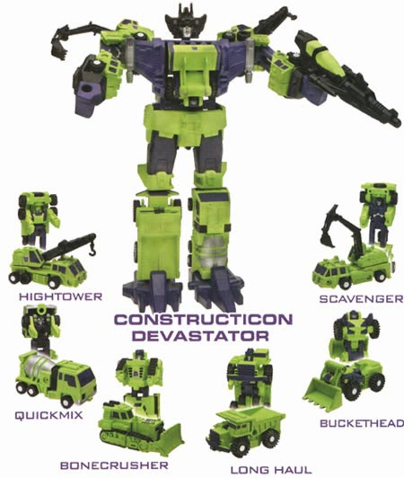
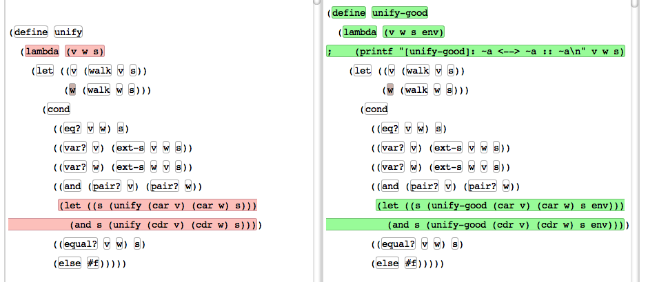

ydiff 是我的一个小实验，用以探索一种全新的程序比较以及版本控制系统。说它是“小实验”的原因是因为实现它所用的技能占不到我头脑 10% 的能力，我花在上面的时间不到一个月。我一直以为已经有其他人做出了类似的系统，可是几年以后我才发现，它所包含的技术对于别人来说的难度出乎我的意料之外。ydiff 到现在仍然是世界上最先进的程序比较系统。它的算法精确性和界面的友好性，大大超过了 Semantic Designs SmartDifferencer, Compare++ 等商业产品。
也许我根本不应该给它起名叫“ydiff”，让人感觉它只不过是对 diff 的微小改进。然而，ydiff 的原理比起 diff，其实是革命性的进步。如果说 ydiff 的代码里面有一块是 diff 的话，那块代码占据的比重不到 1%。
ydiff 与 diff 的本质区别在于，diff 只是对程序进行基于“文本”的对比，它根本不对程序进行 parse。而 ydiff 含有完整的针对程序语言的 parser，在得到了 AST 之后，才对 AST 进行“结构化的比较”。
这种结构化的程序比较，不但可以避免文件里的“空白字符”引起的肤浅区别，而且可以根据程序的结构，进行更加有意义的对比。比如，ydiff 不会认为字符串 "1000" 和数字 1000 的区别只是多了一对引号。ydiff 在比较函数的时候，首先寻找名字相同的函数（因为你很有可能把函数移动到了另外的位置），而不只是对相同位置的函数进行无谓的对比。
ydiff 含有 C++, JavaScript 和 Lisp 的 parser。这些 parser，包括用于支持这些 parser 的库代码，全都出自我一个人之手。ydiff 不含有任何第三方代码。ydiff 的 parser 技术不依赖于任何第三方工具（比如 ANTLR 或者 YACC）。
上面的界面有如下特点：
在我看来，ydiff 里面含有以下一些先进的技术：
一般编译器的 parser 都使用像 YACC 和 ANTLR 一样的 parser generator。这种方法虽然可行，但是它有一个很大的问题，就是你需要使用另外一种语言和另外一个工具，这样就多了一层“语义”。当你的 parser 出了问题的时候，你不能使用已有的编程工具进行调试，而只能依靠这种 parser 工具所提供的信息。这就是为什么人们都觉得 parser 很难写。有一家叫 EDG 的公司，专门销售 C++ 的 parser 代码。你可以由此看出 parser 的技术是多么的复杂和混乱。
由于这个原因，很多人的 parser 都是自己手写的。可是手写 parser 相当的费事，而且不模块化。所以函数式语言的社区就出现了 Parsec 这样的“parser combinator library”。它的原理是，每一个 parser 都是一个函数，它接受一个字符串，输出一种特定的 AST 结构。比如你可以写出一个很简单的 parser，它只能从字符串里提取一个变量，或者一个数字。由于函数式语言可以把函数作为数据，这种小的 parser 可以被一些叫做 parser combinator 的“高阶函数”作为输入，然后把它们“组合”在一起，形成更大的 parser。当所有这些 parser 组合在一起，它们就可以拥有分析整个程序文本的威力，就像“组合金刚大力神”一样。

我的 parser 库就是受到了 Parsec 的启发。可是启发归启发，我的库却比 parsec 还好用。它不但更加简单灵活，而且能够检测并且报告“左递归”的位置。这是 Parsec 没有的功能。另外，我的 parser 库使得写 parser 就像写 BNF 范式一样简单，但却又不需要使用像 YACC 一样的麻烦的工具。
比如，C++ 函数的 parser 是这样定义的：
(::= $function-definition 'function
(@or (@... (@? $modifiers) $type
(@= 'name $identifier ) $formal-parameter-list)
(@... (@= 'name $identifier ) $formal-parameter-list))
(@? $initializer)
$function-body)
在创造了这个库之后，我在一天之内写出了一个 JavaScript 的 parser。两天之后，在这个 JS parser 基础上，又写出了一个 C++ 的 parser。两天之内写出 C++ 的 parser 对于很多人来说都是不可思议的事情，但我没有感觉这有什么难度。大部分的人只不过高估了问题的难度，不然就是把问题复杂化了。
最后我的 C++ parser 只有 600 行代码（不包括空行），而 JS 的 parser 只有 470 行代码。最令人惊奇的事情是，Lisp (S-expression) 的 parser 只有 11 行代码，以至于我可以把它完整的贴在这里：
(:: $open
(@or (@~ "(") (@~ "[")))
(:: $close
(@or (@~ ")") (@~ "]")))
(:: $non-parens
(@and (@! $open) (@! $close)))
(::= $parens 'sexp
(@seq $open (@* $sexp) $close))
(:: $sexp
(@+ (@or $parens $non-parens)))
(:: $program $sexp)
ydiff 的结构对比算法含有一些连我都不知道处于什么地位的技巧。但是我知道的是，没有其他任何程序对比系统可以达到这种精确程度和速度。它含有一个基本的基于“动态规划”的结构对比，然而却又含有其它一些非常微妙的细节技术用以提高对比的“合理程度”。
曾经有一位前 Maple 首席构架师跟我讨论 ydiff 里面的技术，后来他发现他所知道的一些最“高深”的算法（比如 anti-unification，Tree Editing Distance），全都已经被我不知不觉用进去了。但我却不知道它们的名字，因为我完全的“重新发明”了它们。我很确信我的代码里面到现在仍然含有其他人都不知道的东西，然而我却没法说清楚是哪些东西，
我不知道也不关心世界上有哪些现存的技术。我只专注于做出我认为最好的东西。其它的东西也许有参考价值，但我却从来没想过去模仿它们。这就是为什么我的代码里面隐藏了大批的不为人所知的，连我都不知道是什么东西的技术，其中有些处于遥遥领先于世界的地位。
不管你在任何位置剪切了一段代码到另外一个地方，ydiff 都能准确的探测到这个动作。比如在上面的代码里面，你也许发现了函数 unify 的主体被移动到了另一个叫做 unify-good 的函数里面。ydiff 能够精确地显示出这个事实：

这种对于代码移动的检测，可以让人找到很长时间段内对代码的一切修改。为此我做了一个实验，我用 ydiff 对比了 V8 编译器的一个文件相距两年的变化，得到了非常直观可读的结果。如果你用普通的 diff 来对比它们，恐怕不会看出很多有用的信息，因为这个文件里的有些函数被切分成了好几个小的“帮助函数”。ydiff 能够准确的找到这些被切分的代码所在的位置。
比如我轻而易举的看到，Shell::Initialize 这个函数被切分成了如下一些函数：
Shell::Initialize Shell::CreateGlobalTemplate Shell::RenewEvaluationContext Shell::InstallUtilityScript
你可以在以下的 ydiff 输出中直观的看到这个事实（搜索 Shell::Initialize 然后就可以点击每一行，看它们到什么地方去了）：